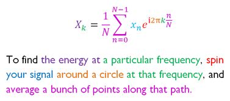

Scientific Memes
Science is an indisputable source of progress for our society. A topical example is the use of recent advances in biochemistry to foster new vaccines for Sars-CoV-19.
The compendium of acquired scientific knowledge is so vast that nobody is expected to be illustrated in every branch of science, not even a field or subfield. For that reason it is difficult to even be aware of the main questions, concepts or definitions addressed currently by almost any discipline. In this regard, it would be helpful if we had at our disposal a collection of brief descriptions for them.
Here we seek to condense in the least amount of words, images, or recording length a given concept in science. Much like memes in Dawkins' description of the term (and contrary to popular usage) scientific memes are meant to be units of scientific information, such as a scientific concept or question, that are transmitted verbally or visually from one mind to another.
Now you might ask how should those memes be. Something like a dictionary entry? Quite not. We would like a more rich medium, with some illustration to it. A very good example is the following explanation of Fourier transform by Stuart Riffle.

The same format has been used to explain other mathematical concepts (examples taken from Better explained)
A not less impressive format is used by physics professor Yuri Kovalenok. The following is only an example of a large collection of notebook notes handwritten by Yuri
More like that by twitter user @ThuyNganVu
Those notes are based on videos recorded by Youtube user 3blue1brown.
I am pretty sure there are more examples like those around but those are the ones I encountered. Often when I learn a new concept I try to leave a note for myself that helps me when I forget what is the meaning.
- Umklapp process: part of the momentum that the neutron gives to the solid goes to the centre of mass of the solid. The other part transforms into phonon modes.
- Anderson & Kondo? Is the hybridisation of strongly correlated electron states with free electron bands. The problem is how to hybridise states of completely different nature.
- Pierls instability is like the resonance in poly-acetylene between alternating bonds. The system spontaneously dimerises in two resonant ground state configurations.
- Bloch states are closely related to chemists resonant structure concept “Modern Cond matter physics book”
- Spin-orbit coupling: Physically it can be understood as the Zeeman coupling between the magnetic moment carried by electron spin and the effective magnetic field seen by the electron in the reference frame in which it is at rest, while the other charges move around it “Modern Condensed matter Physics book”
- Oxidation state: is the formal charge minus electrons shared with less electronegative atoms.
- Josephson junction – a non-superconducting region through which the Cooper pairs responsible for superconductivity can tunnel. This semiconducting “weak link” provides a persistent phase difference between the superconductors in the circuit, similar to the way that a classical battery provides a persistent voltage drop in an electronic circuit. Thanks to this phase difference, a superconducting current (that is, a current with zero dissipation) flows when the junction is embedded in the superconducting circuit Featured in Physics World
- Here’s an extremely brief version of the black hole information paradox: Stuff falls into a black hole. Over time — a long, long time — the black hole “evaporates.” What happened to the stuff? According to the rules of gravity, it’s gone, its information lost forever. But according to the rules of quantum mechanics, information can never be lost. Therefore, paradox. Featured in Quanta magazine
- The biggest puzzle in cosmology right now has to do with the Hubble constant, a measure of the speed at which the universe is expanding. Data from the early universe predicts one value. Data from the modern universe predicts another. Featured in Quanta magazine
- Hawking radiation by Gaston Giribet.
Daniel Menéndez Crespo
Postdoctoral Associate
My research interests include topological quantum chemistry, chemical bonding and scientific computing..